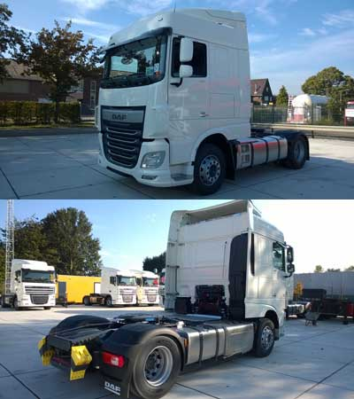

DAF Trucks in Ukraine
NEW VEHICLES IN STOCK IN THE NETHERLANDS
DAF XF 460 FT EURO 6, MX-Engine brake, AS-Tronic
Year of production: 2015 - without prior registration
Space Cab
External sunvisor
LED headlamps with washer
Foglights and cornering lights in bumper
Adjustable roofspoiler, rear fenders
Dashboard aluminium look
Driver seat: Luxury air + armrest
Co-driver seat: basic
Air blow gun preparation
Lower bunk with drawer
Refrigerator drawer 42 litres
Nightheater: air heater
Automatic Temperature Control (ATC)
Preparation for German Maut
Tachograph digital
Luxury speaker system with 6 speakers, no radio
Antennas: AM/FM, 2 x GSM, GPS and CB
Adaptive Cruise Control (ACC) with
Forward Collision Warning (FCW) function and
Advanced Emergency Braking System (AEBS)
Predictive Cruise Control (PCC)
Lane Departure Warning System (LDWS)
Electronic Vehicle Stability Control system (VSC)
Front: 8,00 t, parabolic suspension, 163N
Rear: 13,00 t, airsuspension, 4 bellows, SR1347
Axle load monitoring
Front tyres 315/70 R22.5
Rear tyres 315/70 R22.5
Without sparewheel
Tyres:Goodyear
MX340, 340 kW/460 pk
Emission: Euro 6
ZF AS Tronic-gearbox, 12 gears DD, with FastShift, EcoRoll and Hill Start Aid (HSA) functions
MX Engine Brake
Rear axle ratio 2,69
Wheelbase 3,80 m
Aluminium fueltanks 845 + 430 litres
Ad-Blue tank 90 litres
Fifth wheel Jost, JSK37C, 150 + 12 mm
PTO prepration (BBM module), no PTO
Alternator 120 A, batteries 2x 230 Ah
Cold climate conditions
Anti-dust blow-up shield
DAF MultiSupport Warranty Plus (1 year Full, 3 years Driveline up to 500.000 km) SEE DAF WARRANTY CONDITIONS
For more info call:
Igor Buslenko (050-351-57-21), Sergey Arkhipov (050-334-84-26), Office in Kiev (044-461-93-31)

NEW VEHICLES IN STOCK IN UKRAINE (Gostomel)
DAF FT XF105 Space Cab series (4x2 tractor)
* Space Cab * EURO 5 * L * ABS *
CAB EXTERIOR
Space Cab, Cab suspension mechanical, Electric doorlocks & remote control, 2 keys, Basic immobiliser, Tinted glass, Electrical adjustable heated mirrors, Sunvisor, Front view mirror, Halogen headlamps, Combilights in bumper
AERODYNAMICS AND COLOURS
Corner-airdeflector, Adjustable roofspoiler, colour: brilliant white, Fenderset behind cab, 2.55 m. width, brilliant white, both sides hinged, Mirror covers black, Cab colour Brilliant White, Chassis colour grey
CAB INTERIOR
Speedometer scale km / h, Driver seat air standard "Comfort Air", Armrest on driver chair, Co-driver seat rigid, Seat belts, Refrigerator 42 ltr. (integrated (drawer) unit), Lower bunk (raised level) and upper bunk with step, Driver electrical window opener, Co-driver electrical window opener, Nightheater: Airheater D4S, Air-conditioning, Cab floormats
COMMUNICATION AND DRIVER SUPPORT
FMS connector prepared, Digital tachograph, Speedlimiter setting 85 km/h NOMINAL, Radio / USB player basic and speaker set, Antennas: 1 x combi AM/FM and GSM, 1 x GPS, 1 x CB, Cruise control, Reverse warning signal
SUSPENSION & AXLE LOAD
Front suspension parabolic, Rear suspension air, Front axle type 152 N, 7.5 t (technically), Rear axle type 1347, 13.0 t (technically)
WHEELS & TYRES
Size 315 / 70 R 22.5, No spare tyre, Tyres Good Year, Wheels steel disc / colour silver, Protection rings / colour silver
DRIVELINE
Engine MX, 6 cylinder 12,9 ltr. turbo intercooling with Electronic Unit Pump system (EUP), Enginepower: MX340 / 460 hp (2.300 Nm from 1.000 till 1.410 rpm), Rear axle ratio 2.69, Mechanical differential lock, Anti Spin Control (ASR)
BRAKE SYSTEM
Full air brakes, Ventilated disc brakes front and rear, Exhaust brake, MX Engine Brake, EBS (electronic brake system incl. ABS)
CHASSIS
Wheelbase 3.80m / rear overhang 0.99m, Fuel tank Aluminium: 850 + 430 litres (620 mm heigh) (no spare wheel and no spare wheel holder) with 75 liter AdBlue tank, Lockable fuel filler cap, No spare wheel carrier, Catwalk + step, Rear mudguards, Rear worklamp white, Spray suppression, Two wheel chocks, AdBlue tank, 75 liter, Front underrun protection
DRAWBAR & TRAILER EQUIPMENT
5th. wheel Jost, 5th. wheel height 150-12 in stead of 150-40, KA dim. 670, Pneumatic connections palm, El. trailer wiring 2 x 7 pls + EBS
ELECTRICAL POWER SUPPLY
Alternator 110 Amp., Batteries 2 x 225 Ah
LEGAL ASPECTS AND APPLICATION CONDITIONS
GVM 20500 kg max, GCM 44000 kg max, Emission : Euro 5 (SCR - Selective Catalytic Reduction system - DeNOx technology) with AdBlue, Noise < 80 dB(A) ISO, Cold climate conditions, Moisture separator and heated filter, Airintake behind cab / non cyclonic.
WARRANTY AND VEHICLE DELIVERY
1 year full warranty, 2 years driveline warranty, Toolkit East Europe, Specification check, technical check, cleaning, Tyre inflation hose 20 mtr., First aid kit, Spare bulb kit, Warning triangle
For more info call:
Igor Buslenko (050-351-57-21), Sergey Arkhipov (050-334-84-26), Office in Kiev (044-461-93-31)
 DAF FT CF 85.460 series (4 x 2 tractor)
DAF FT CF 85.460 series (4 x 2 tractor)
* Sleeper Cab * EURO 3 * L * ABS *
CAB EXTERIOR
Sleeper cab, Door locks: all electrical + remote control, Electric lock co-driver, Basic immobiliser, Tinted glass, Front view mirror, Electrical adjustable heated mirrors, Halogen headlamps, Combilights in bumper, Four lights on roof
AERODYNAMICS AND COLOURS
Corner-airdeflectors, Adjustable roofspoiler, colour: brilliant white, Fenderset behind cab, colour: brilliant white, Cab colour Brilliant White, Mirror covers black, Front bumper and cab step in cab colour, Chassis colour grey
CAB INTERIOR
Speedometer scale km / h, Driver electrical window opener, Co-driver electrical window opener, Driver seat air standard, Co-driver seat rigid, Seat belts, Storage engine tunnel, Roof hatch aluminium / manual, Curtains in cab, Lower bunk, raised level 250mm (in case of sleeper cab, no upper bunk), Nightheater: Airheater, Air-conditioning, Partial carpets in cab
COMMUNICATION AND DRIVER SUPPORT
FMS connector prepared, Digital tachograph, Speedlimiter setting 85 km/h NOMINAL, Radio / USB player basic and speaker set, Antennas: 1 x combi AM/FM, 2 x GSM, 1 x GPS, Cruise control, Reverse warning signal
SUSPENSION & AXLE LOAD
Front suspension parabolic, Rear suspension air, Front axle type 152 N, 7.5 t (technically), Rear axle type 1347, 13.0 t (technically)
WHEELS & TYRES
Front tyres 385 / 65 R 22.5, Size 315 / 80 R 22.5 (4 x), Spare wheel 315/80 R22.5 (1 x), Tyres Goodyear, Wheels steel disc / colour silver, Protection rings / colour silver
DRIVELINE
Engine MX, 6 cylinder 12,9 ltr. turbo intercooling with Electronic Unit Pump system (EUP), Enginepower: MX340 / 460 hp (2.300 Nm from 1.000 till 1.410 rpm), Manual gearbox ZF 16S25.. / 0.84, Rear axle ratio 3.31, Mechanical differential lock, Rear axle ratio 3.31, Anti Spin Control (ASR)
BRAKE SYSTEM
Full air brakes, Ventilated disc brakes front and rear, Exhaust brake, MX Engine Brake, EBS (electronic brake system incl. ABS)
CHASSIS
Wheelbase 3.80m / rear overhang 0.99 m, Side member height 260 mm, 7.0 mm-reinf front, Exhaust discharge to right-hand side, Fuel tank Aluminium: 620 litres (620 mm heigh), Lockable fuel filler cap, Spare wheel carrier side, Catwalk + step, Rear mudguards, Rear worklamp white, Spray suppression, Front underrun protection, Two wheel chocks
DRAWBAR & TRAILER EQUIPMENT
5th. wheel Jost, 5th. wheel height 150-40, KA dim. 680, Pneumatic connections palm, El. trailer wiring 2 x 7 pls + EBS
POWER TAKE OFF AND ELECTRICAL POWER SUPPLY
Alternator 80 Amp., Batteries 2 x 225 Ah
LEGAL ASPECTS AND APPLICATION CONDITIONS
GVM 20500 kg max, GCM 44000 kg max, Emission : Euro 3, Noise < 80 dB(A) ISO, Cold climate conditionsm, Cyclonic airintake behind cab, Radiator protection plate, Oil cooler gearbox
WARRANTY AND VEHICLE DELIVERY
1 year full warranty, 2 years driveline warranty, Toolkit East Europe, Pre delivery inspection, Tyre inflation hose 20 mtr., First aid kit, Spare bulb kit, Warning triangle
For more info call:
Igor Buslenko (050-351-57-21), Sergey Arkhipov (050-334-84-26), Office in Kiev (044-461-93-31)
.jpg) DAF FTT CF 85.460 series (6 x 4 tractor)
DAF FTT CF 85.460 series (6 x 4 tractor)
* Sleeper Cab * MX EURO 3 * L * ABS *
CAB EXTERIOR
Sleeper cab, Cab suspension mechanical, Electric lock co-driver, Basic immobiliser, Sunvisor, Tinted glass, Front view mirror, Electrical adjustable heated mirrors, Halogen headlamps, Combilights in bumper
AERODYNAMICS AND COLOURS
Corner-airdeflectors, Cab colour Brilliant White, Mirror covers black, Front bumper and cab step in cab colour, Chassis colour grey
CAB INTERIOR
Speedometer scale km / h, Driver electrical window opener, Co-driver electrical window opener, Driver seat air standard, Co-driver seat rigid, Seat belts, Storage engine tunnel, Roof hatch aluminium / manual, Curtains in cab, Lower bunk, raised level 250mm (in case of sleeper cab, no upper bunk), Nightheater: Airheater, Air-conditioning, Partial carpets in cab
COMMUNICATION AND DRIVER SUPPORT
Digital tachograph instead of mechanical, Speedlimiter setting 85 km/h NOMINAL, Radio / USB player basic and speaker set, Antennas: 1 x combi AM/FM and GSM, Cruise control, Reverse warning signal
SUSPENSION & AXLE LOAD
Front suspension parabolic, Rear axles airsuspended, 2 x 13 t, Front axle type 152 N, 7.5 t (technically), Rear axle type 1355 Tandem, 26.0 t (technically), springs 26 t/bk 26 t
WHEELS & TYRES
Size 315 / 80 R 22.5 (10 x), No spare tyre, Tyres Goodyear, Wheels steel disc / colour silver, Protection rings / colour silver
DRIVELINE
Engine MX, 6 cylinder 12,9 ltr. turbo intercooling with Electronic Unit Pump system (EUP), Enginepower: MX340 / 460 hp (2.300 Nm from 1.000 till 1.410 rpm), Manual gearbox ZF 16S25.. / 0.84, Rear axle ratio 4.05, Mechanical differential lock
BRAKE SYSTEM
Full air brakes, Ventilated disc brakes front; rear drum brakes, Exhaust brake, MX Engine Brake, EBS (electronic brake system incl. ABS)
CHASSIS
Wheelbase 3.90m / rear overhang 1.65 m, Fueltank 300 liter, Lockable fuel filler cap, Catwalk + step, Rear mudguards, Rear worklamp white, Spray suppression, Front underrun protection
DRAWBAR & TRAILER EQUIPMENT
5th. wheel Jost, 5th. wheel height 250-26, KA dim. 380, Pneumatic connections palm, El. trailer wiring 2 x 7 pls + EBS
POWER TAKE OFF AND ELECTRICAL POWER SUPPLY
Gearbox PTO1-Z-1b with control, Alternator 80 Amp., Batteries 2 x 225 Ah
LEGAL ASPECTS AND APPLICATION CONDITIONS
GVM 33000 kg max, GCM 58000 kg max, Emission : Euro 3, Noise < 80 dB(A) ISO, Cold climate conditions, Moisture separator and heated filter, Cyclonic airintake behind cab, Radiator protection plate, Oil cooler gearbox (not i.c.w. Intarder)
WARRANTY AND VEHICLE DELIVERY
1 year full warranty, 2 years driveline warranty, Toolkit East Europe, Pre delivery inspection, Tyre inflation hose 20 mtr., First aid kit, Spare bulb kit, Warning triangle
For more info call:
Igor Buslenko (050-351-57-21), Sergey Arkhipov (050-334-84-26), Office in Kiev (044-461-93-31)
ABOUT DAF
History in brief
DAF Trucks N.V. is active in Ukraine since 1990.
From 1997, the company has been represented by TRAXIM B.V.'s Kiev Representation Office.
Achievements
During the years, the DAF brand has gained a huge popularity among Ukrainian transport operators. The evidence is undisputedly visible on the Ukrainian roads, everyday; nearly one of every 5 imported heavy trucks is a DAF !
DAF is substantially represented in the large vehicle fleets of operators like Trans-Service 1, Obolon, Avtologistika, Sanoil, N-Trans, Eurotrade, OKKO, Agrotep,Trade Line, Mriya-Trans, etc.
And in particular also the middle-size and small transport companies appreciate the DAF brand and expand their fleets with DAF trucks.
Organisation
Sales of new and used DAF trucks, new and used (tank-) semi-trailers, superstructures for DAF chassis, etc. all over Ukraine is coordinated centrally in Kiev.
Central technical truck service is provided by Truck Centre Ltd. in Gostomel, Kiev Region.
Import and distribution of original DAF spare parts is provided by TRAXPARTS Ukraine Ltd., with the central parts warehouse located as well in Gostomel.
Service contract partners are located in amongst others Dnepropetrovsk and Lviv.
TRAXPARTS Ukraine Ltd. carries out daily parts deliveries to all Ukrainian regions.
Stable experienced team, ready to cooperate with you!
We are proud on the fact that key persons in DAF's Ukrainian team are working with the company already for over 15 years. This is unique in the Ukrainian world of truck-distributers and truck-service companies where job-hopping is very common!
For you as client, it guarantees that you are working with experienced, motivated people who know the demands of Ukrainian transport operators as no other.
Challenge us; we are eager to serve you with our best advices based on long term experience and direct back-up from DAF Trucks N.V. in the Netherlands.
Complete and integrated transport solutions
Road tractors need semi-trailers, truck chassis need superstructures.
The Ukrainian DAF team offers complete solutions, in close cooperation with famous producers like:
- LAG Trailers N.V. (a.o. tank semi-trailers for foodstuff, chemicals and fuel distribution),
- Schmitz (a.o. tented, tipper, container and refrigerated semi-trailers),
- Schwarzmueller (a.o. tipper bodies, semi-trailers),
- Jumbo (a.o. semi-trailers for bricks and concrete elements),
- Mulder Europe (concrete mixers),
- ZF (a.o. gearboxes, steering systems, axles).
Close cooperation with these producers ensures that your vehicle combinations deliver optimal performance.
Also loading cranes, tail lifts, cooling units, etc. are included in the scope of deliveries.
Contacts
The chapter "Contacts" will lead you to the truck sales, parts sales and technical service departments.
We are glad to be of service to you !
The DAF team in Ukraine.